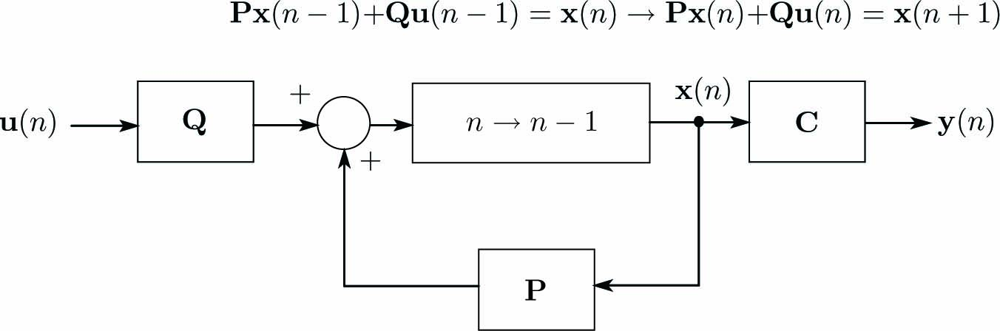

離散時間状態方程式は次式となります。
\begin{align} \left. \begin{array}{@{\,}rl} \mathbf{x}(n+1)=&\mathbf{P}\mathbf{x}(n) + \mathbf{Q}\mathbf{u}(n)\\ \mathbf{y}(n) =&\mathbf{C}\mathbf{x}(n) \end{array} \right\} \label{eq:DiscStateEq} \end{align}ここに、\(\mathbf{x}(n)\)は状態ベクトル、\(\mathbf{y}(n)\)は出力ベクトル、\(\mathbf{P}\)は遷移行列、\(\mathbf{Q}\)は入力係数行列です。
式\eqref{eq:DiscStateEq}をブロック線図で表現すると下図になります。
多変数連続時間状態方程式を次式とします。
\begin{align} \left. \begin{array}{@{\,}cl} \dot{\mathbf{x}} ~=& \mathbf{A}\mathbf{x} + \mathbf{B}\mathbf{u}\\ \mathbf{y} ~=& \mathbf{C}\mathbf{x} \end{array} \right\} \label{eq:AnlgStateEq} \end{align}ここで、行列指数関数\(e^{\mathbf{X}}\)を導入します。
\begin{align} e^{\mathbf{X}} = \sum_{n=0}^{\infty}\frac{1}{n!}\mathbf{X}^n = \mathbf{I}+\frac{1}{1!}\mathbf{X}+\frac{1}{2!}\mathbf{X}^2++\frac{1}{3!}\mathbf{X}^3+\cdots \label{eq:MatExp} \end{align} 指数関数\(e^{x}\)と同様に次式が成立します。 \begin{align} \frac{de^{\mathbf{X}}}{dt} = \dot{\mathbf{X}}e^{\mathbf{X}} \label{eq:DffMatExp} \end{align}式\eqref{eq:AnlgStateEq}に\(\mathbf{x}=e^{\mathbf{A}t}\mathbf{c}\)を代入すると次式が得られます。
\begin{align} e^{\mathbf{A}t}\dot{\mathbf{c}} = \mathbf{B}\mathbf{u} \label{eq:VecEq1} \end{align}式\eqref{eq:VecEq1}の両辺に左側から\(e^{-\mathbf{A}t}\)を乗じて積分すると次式になります。
\begin{align} \mathbf{c}(t) = \int_0^t e^{-\mathbf{A}t}\mathbf{u}(\tau)d\tau + \mathbf{d} \label{eq:SysEqn3} \end{align}ここに、\(\mathbf{d}\)は定数ベクトルです。
式\eqref{eq:SysEqn3}の\(\mathbf{c}(t)\)を\(\mathbf{x}=\mathbf{c}e^{\mathbf{A}t}\)に代入すると\(\mathbf{x}\)は次式となります。
\begin{align} \mathbf{x}(t)=\mathbf{d}e^{\mathbf{A}t} + \int_0^t e^{-\mathbf{A}(\tau-t)}\mathbf{u}(\tau)d\tau \label{eq:SysEqn4} \end{align}\(t=0\)のとき\(\mathbf{x}=\mathbf{d}=\mathbf{x}(0)\)となるので、式\eqref{eq:SysEqn4}は次式となります。
\begin{align} \mathbf{x}(t)=e^{\mathbf{A}t}\mathbf{x}(0) + \int_0^t e^{-\mathbf{A}(\tau-t)}\mathbf{u}(\tau)d\tau \label{eq:SysEqn5} \end{align}\(t=nT\)のとき\(\mathbf{x}=\mathbf{x}(nT)\)とすれば式\eqref{eq:SysEqn5}から次式が得られます。
\begin{align} \mathbf{x}(nT)=e^{\mathbf{A}nT}\mathbf{x}(0) + \int_0^{nT} e^{-\mathbf{A}(\tau-nT)}\mathbf{u}(\tau)d\tau \label{eq:SysEqn6} \end{align}\(t=(n+1)T\)のとき\(\mathbf{x}=\mathbf{x}((n+1)T)\)とすれば式\eqref{eq:SysEqn5}から次式が得られます。
\begin{align} \mathbf{x}((n+1)T)=e^{\mathbf{A}(n+1)T}\mathbf{x}(0) + \int_0^{(n+1)T} e^{-\mathbf{A}(\tau-(n+1)T)}\mathbf{u}(\tau)d\tau \label{eq:SysEqn6_2} \end{align}式\eqref{eq:SysEqn6}の両辺に\(e^{\mathbf{A}T}\)を乗じて、式\eqref{eq:SysEqn6_2}の両辺から引くと次式が得られます。
\begin{align} \mathbf{x}((n+1)T)-e^{\mathbf{A}T}\mathbf{x}(nT) =& \int_0^{(n+1)T} e^{-\mathbf{A}\{-\tau-(n+1)T\}}\mathbf{u}(\tau)d\tau - e^{\mathbf{A}nT}\int_0^{nT} e^{-\mathbf{A}(\tau-nT)}\mathbf{u}(\tau)d\tau \nonumber\\ =& \int_0^{(n+1)T} e^{-\mathbf{A}\{-\tau-(n+1)T\}}\mathbf{u}(\tau)d\tau - \int_0^{nT} e^{-\mathbf{A}(\tau-(n+1)T)}\mathbf{u}(\tau)d\tau \nonumber\\ =& \int_{nT}^{(n+1)T} e^{-\mathbf{A}\{\tau-(n+1)T\}}\mathbf{u}(\tau)d\tau \label{eq:SysEqn6_1} \end{align}\(\tau^\prime=\tau-nT\)に変数変換し、式\eqref{eq:SysEqn6_1}の時間積分区間\([nT,(n+1)T]\)では\(\mathbf{u}(\tau)=\mathbf{u}(nT)\)とすると次式になります。
\begin{align} \mathbf{x}((n+1)T)=e^{\mathbf{A}T}\mathbf{x}(nT) + \{\int_0^T e^{-\mathbf{A}(\tau^\prime-T)}\}d\tau^\prime\mathbf{u}(nT) \label{eq:SysEqn7} \end{align}式\eqref{eq:SysEqn7}の\(\mathbf{x}(nT)\)、\(\mathbf{u}(nT)\)をそれぞれ\(\mathbf{x}(n)\)、\(\mathbf{u}(n)\)と表記して\(\tau^\prime\)を\(\tau\)に置き換え、
\begin{align} \mathbf{P}=e^{-\mathbf{A}T},~~~\mathbf{Q}=\int_0^T e^{-\mathbf{A}(\tau - T)}d\tau=\mathbf{A}^{-1}(e^{\mathbf{A}T}-\mathbf{I})\mathbf{B} \end{align}とおくと、次の離散時間状態方程式が得られます。
\begin{align} \left\{ \begin{array}{@{\,}rl} \mathbf{x}(n+1)=&\mathbf{P}\mathbf{x}(n) + \mathbf{Q}\mathbf{u}(n)\\ \mathbf{y}(n) =&\mathbf{C}\mathbf{x}(n) \end{array} \right. \nonumber \end{align}